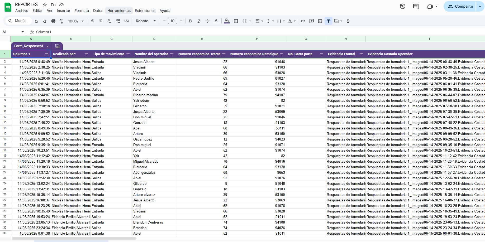
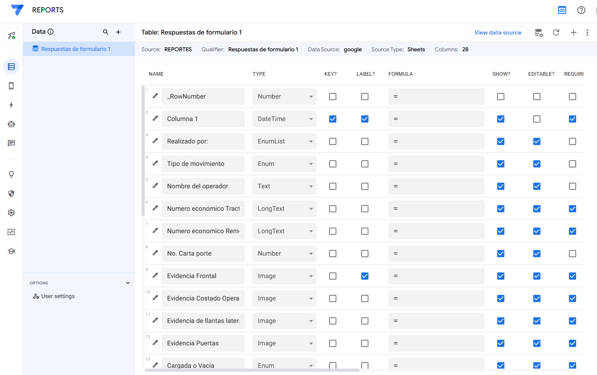
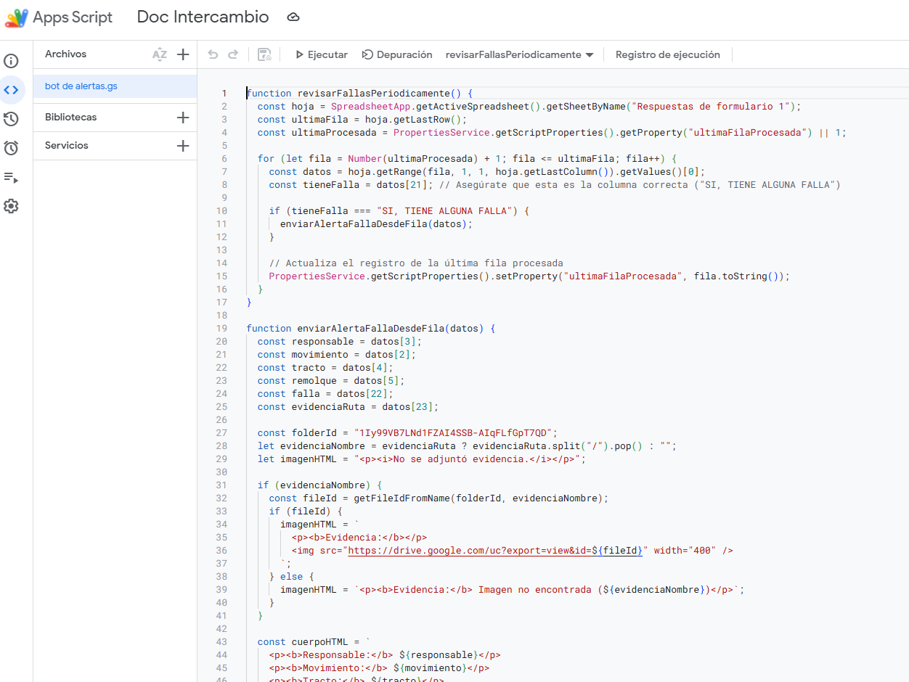

<style>
  #detalle-proyecto2 {
    background: #ffffff;
    border-radius: 12px;
    padding: 32px 24px;
    margin: 32px auto;
    max-width: 900px;
    box-shadow: 0 4px 18px rgba(0,0,0,0.08);
    font-family: 'Segoe UI', Arial, sans-serif;
  }
  #detalle-proyecto2 h2 {
    color: #1a365d;
    margin-bottom: 18px;
    font-size: 2rem;
    text-align: center;
  }
  #detalle-proyecto2 h3 {
    color: #2a53aa;
    margin-top: 28px;
    margin-bottom: 12px;
    font-size: 1.2rem;
  }
  #detalle-proyecto2 ol, #detalle-proyecto2 ul {
    margin-left: 24px;
    margin-bottom: 18px;
  }
  #detalle-proyecto2 li {
    margin-bottom: 10px;
    line-height: 1.6;
  }
  .proyecto2-imgs {
    display: flex;
    flex-wrap: wrap;
    gap: 18px;
    justify-content: center;
    margin: 30px 0 10px 0;
  }
  .proyecto2-imgs img {
    border-radius: 8px;
    box-shadow: 0 2px 8px rgba(0,0,0,0.10);
    width: 260px;
    max-width: 90vw;
    object-fit: cover;
    background: #fff;
    border: 1px solid #e2e8f0;
    transition: transform 0.2s;
  }
  .proyecto2-imgs img:hover {
    transform: scale(1.04);
  }
  .img-caption {
    text-align: center;
    font-size: 0.96rem;
    color: #ffffff;
    margin-top: 4px;
    margin-bottom: 14px;
  }
</style>

<section id="detalle-proyecto2">
  <h2>Registro y Control de Unidades con AppSheet</h2>
  
  <div class="proyecto2-imgs">
    <div>
      
      <div class="img-caption">Formulario de registro en AppSheet</div>
    </div>
    <div>
      
      <div class="img-caption">Alerta automática enviada a WhatsApp</div>
    </div>
    <div>
      
      <div class="img-caption">Reporte con fotos enviado por correo</div>
    </div>
  </div>

  <h3>¿Cómo se creó?</h3>
  <ol>
    <li>
      <strong>Diseño de la base de datos:</strong>
      Se creó una hoja de cálculo en Google Sheets para almacenar los registros de entrada y salida de las unidades, incluyendo campos como fecha, hora, fotos y observaciones.
    </li>
    <li>
      <strong>Construcción de la app en AppSheet:</strong>
      Se conectó la hoja de cálculo a AppSheet y se diseñaron formularios personalizados para capturar la información de cada unidad, permitiendo adjuntar fotos y registrar fallas.
    </li>
    <li>
      <strong>Automatización de alertas:</strong>
      Se configuraron bots en AppSheet para detectar automáticamente si una unidad llega con alguna falla. En ese caso, el sistema envía una alerta a un grupo de WhatsApp usando una integración con servicios externos (como Zapier o Webhooks).
    </li>
    <li>
      <strong>Envío de reportes por correo:</strong>
      Al finalizar cada registro, la app genera y envía automáticamente un correo electrónico con una plantilla que incluye los datos y las fotos de la unidad.
    </li>
  </ol>

  <h3>¿Cómo funciona?</h3>
  <ul>
    <li>El usuario ingresa los datos de la unidad al llegar o salir, adjuntando fotos y observaciones.</li>
    <li>Si se reporta una falla, se genera una alerta automática al grupo de WhatsApp.</li>
    <li>Al guardar el registro, se envía un correo con la información y las imágenes capturadas.</li>
    <li>Todo el historial queda almacenado para consulta y seguimiento.</li>
  </ul>

  <h3>Tecnologías utilizadas</h3>
  <ul>
    <li>AppSheet</li>
    <li>Google Sheets</li>
    <li>Integraciones con WhatsApp (Zapier/Webhooks)</li>
    <li>Automatización de correos electrónicos</li>
  </ul>
</section>